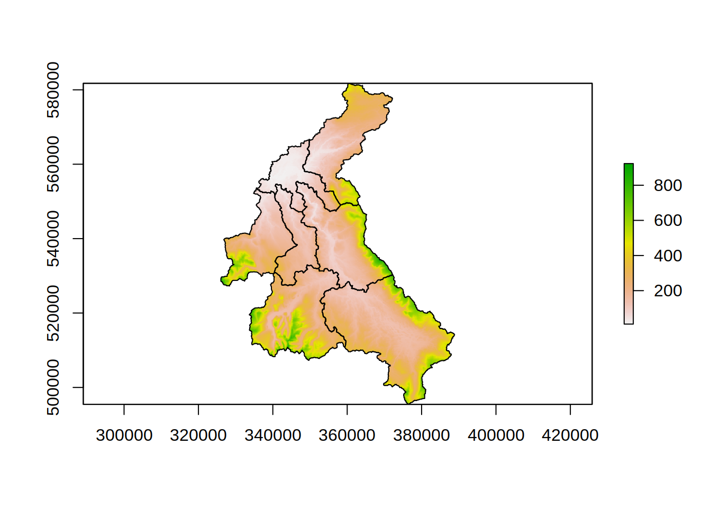

Initial GIS processing
Aim
To explore and pre-process the GIS data for the Eden catchment.
Installing required R packages
R has multiple packages for the processing and analysis spatial data. A good overview is given in the Spatial Task View on CRAN. For this part of the training course we use a set of mature packages, rgeos, rgdal, and raster. Similar results could be obtained using either of the terra or sf packages.
To install the packages enter at the R command prompt
install.packages(c("rgeos","rgdal","raster","sp","ncdf4"))Once installed the raster and sp packages are attached to the R environment so that there functions are available.
library(raster)
library(sp)Loading Data
There are four types of spatial data in the example; raster, polygons, lines and points; in three different formats; Geotiff, shapefile and csv.
To start use functions in the raster package to load both the raster data and that contained in the shapefiles:
dem <- raster(file.path(".","unprocessed","Eden_DEM.tif")) # load the dem as a raster layer
#> Warning in showSRID(SRS_string, format = "PROJ", multiline = "NO", prefer_proj =
#> prefer_proj): Discarded datum OSGB 1936 in Proj4 definition
eden <- shapefile(file.path(".","unprocessed","Eden_Catchment")) # load the outline of the sub-catchments from the shapefile
#> Warning in OGRSpatialRef(dsn, layer, morphFromESRI = morphFromESRI, dumpSRS =
#> dumpSRS, : Discarded datum OSGB_1936 in Proj4 definition: +proj=tmerc +lat_0=49
#> +lon_0=-2 +k=0.9996012717 +x_0=400000 +y_0=-100000 +ellps=airy +units=m +no_defs
channel <- shapefile(file.path(".","unprocessed","Eden_River_Network")) # load the river network from the shapefile
#> Warning in OGRSpatialRef(dsn, layer, morphFromESRI = morphFromESRI, dumpSRS =
#> dumpSRS, : Discarded datum OSGB_1936 in Proj4 definition: +proj=tmerc +lat_0=49
#> +lon_0=-2 +k=0.9996012717 +x_0=400000 +y_0=-100000 +ellps=airy +units=m +no_defs
urban <- shapefile(file.path(".","unprocessed","Eden_Urban")) # load the urban area map from the shapefile
#> Warning in OGRSpatialRef(dsn, layer, morphFromESRI = morphFromESRI, dumpSRS =
#> dumpSRS, : Discarded datum OSGB_1936 in Proj4 definition: +proj=tmerc +lat_0=49
#> +lon_0=-2 +k=0.9996012717 +x_0=400000 +y_0=-100000 +ellps=airy +units=m +no_defsTyping the variable name at the R prompt will display a summary of the data loaded, for example
dem
#> class : RasterLayer
#> dimensions : 863, 629, 542827 (nrow, ncol, ncell)
#> resolution : 100, 100 (x, y)
#> extent : 326000, 388900, 495450, 581750 (xmin, xmax, ymin, ymax)
#> crs : +proj=tmerc +lat_0=49 +lon_0=-2 +k=0.9996012717 +x_0=400000 +y_0=-100000 +ellps=airy +units=m +no_defs
#> source : Eden_DEM.tif
#> names : Eden_DEM
#> values : -2.7, 923.425 (min, max)Comparing between the dem, eden, channel and urban variable shows that:
- there is a common projection
- the cells of DEM are square
WARNING: dynatopGIS only works with projected raster data with square cells! It is best to make sure you DEM has these properties before starting any analysis.
Reading the gauge locations from the csv file is a two stage process
# read in the csv file to a date.frame
csvGauges <- read.csv(file.path(".","unprocessed","Eden_Gauge_Sites.csv"))
# convert the data frame to a SpatialPointsDataFrame - take projection from the DEM
gauges <- SpatialPointsDataFrame(coords=csvGauges[,c("x","y")],proj4string=crs(dem),data=csvGauges)Next plot the data using the default methods in the raster package
plot(dem) # underlying coloured image with scale
plot(urban,add=TRUE,col="grey") # grey polygons
plot(channel,add=TRUE,col="blue") # channels as blue lines
plot(eden,add=TRUE) # outlines of sub-catchments in black
plot(gauges,add=TRUE,col="red") # gauges as red +
Rasterising Layers
The basis of the landscape discretisation is the DEM of the catchment. Any information we may want to use in the classification of the catchment leading to the definition of the Hydrological Response Units has to be provided as a raster of the same resolution and projection as the DEM.
Since both the urban areas and sub-catchments may be used in the classification both are rasterised. In R all raster values must be numeric. For both the urban and sub-catchments the values are taken from the unique identifiers in the data.
In the case of the urban data there are two possible identifiers objectid and bua_id:
## show data frame with id values
head(urban@data)
#> objectid bua11cd bua11nm bua_id has_sd sd_count urban_bua
#> 0 39 E34000039 Penrith BUA 747 N 0 Yes
#> 1 47 E34000047 Brough (Eden) BUA 1465 N 0 No
#> 2 297 E34000297 Gilsland BUA 4584 N 0 No
#> 3 869 E34000869 Lazonby BUA 1016 N 0 No
#> 4 899 E34000899 Kirkby Stephen BUA 1359 N 0 No
#> 5 986 E34000986 Dalston BUA 919 N 0 No
#> st_areasha st_lengths
#> 0 4647359.1 19399.690
#> 1 324993.0 5799.919
#> 2 214996.1 3499.903
#> 3 412499.4 5600.042
#> 4 692492.4 9500.029
#> 5 582500.1 7699.932
## rasterise using objectid as the raster value
urban_raster <- rasterize(urban, dem, field="objectid")
## plot the resulting raster
plot(urban_raster)
For the sub-catchments the values are set to the numeric id:
## show data frame with id values
head(eden@data)
#> id label
#> 0 76007 Eden at Sheepmount
#> 1 76003 Eamont at Udford
#> 2 76005 Eden at Temple Sowerby
#> 3 76017 Eden at Great Corby
#> 4 76008 Irthing at Greenholme
#> 5 76010 Petteril at Harraby Green
## rasterise
eden_raster <- rasterize(eden, dem, field="id")
## plot the resulting raster
plot(eden_raster)
The raster fields created (eden_raster, urban_raster) exist only in memory (or temporary files). Since they will be needed later we will save them:
writeRaster(eden_raster,file.path(".","processed","eden.tif"),overwrite=TRUE)
#> Warning in showSRID(SRS_string, format = "PROJ", multiline = "NO", prefer_proj =
#> prefer_proj): Discarded datum OSGB 1936 in Proj4 definition
writeRaster(urban_raster,file.path(".","processed","urban.tif"),overwrite=TRUE)
#> Warning in showSRID(SRS_string, format = "PROJ", multiline = "NO", prefer_proj =
#> prefer_proj): Discarded datum OSGB 1936 in Proj4 definitionDigital Elevation Model
In the plot of the loaded data we can see that the DEM extends beyond the boundary of the catchment. The processing in dynatopGIS treats all the finite DEM values as being within the catchment. This means we need to trim the DEM to the catchment boundaries.
To achieve this we will mask the DEM with the rasterised catchment, so setting all values not in the catchment to NA.
masked_dem <- mask(dem,eden_raster)
plot(masked_dem)
plot(eden,add=TRUE)
Save the masked DEM for later use:
writeRaster(masked_dem,file.path(".","processed","dem.tif"),overwrite=TRUE)
#> Warning in showSRID(SRS_string, format = "PROJ", multiline = "NO", prefer_proj =
#> prefer_proj): Discarded datum OSGB 1936 in Proj4 definitionTo those of familiar with the raster package might have noticed that
edenDEMcould have created in one line byedenDEM <- rasterize(eden, dem, mask=TRUE)
Channel Network
The representation of the channel network in dynatop is as a series of connected reach lengths. In the processing done by dynatopGIS Each reach is represented by a single spatial line or polygon. The data for each reach must include an identifier for the head and foot of the reach to allow the connectivity to be derived as well as the reach length. Examining the data for the example with
head(channel@data)
#> name1 identifier
#> 0 <NA> 71496043-333C-4644-814E-B3149484421A
#> 1 Rowantree Gill C1E710A3-ED27-4F9A-BF57-9E2314535C60
#> 2 Lady Sike 0B92A0E8-4B7B-43D0-9C01-CECD46AD3942
#> 3 <NA> 223E669F-BC1A-4610-B0C4-D77DC60F805B
#> 4 Potter Sike D0D77BE7-8F5F-45A8-9AD4-9EABE2534027
#> 5 Molds Sike EB6B86F7-4DDD-4FEC-BA86-EAA608D2DF52
#> startNode endNode
#> 0 785AA707-7ACC-433F-8418-BDDA18FABB2C FD4A9B62-950E-4362-B4AC-0713D63B99D1
#> 1 FD4A9B62-950E-4362-B4AC-0713D63B99D1 323B8FBC-8D31-4130-B924-A236F14BC96D
#> 2 76150301-B4E4-4B35-8CB0-C562296976A1 41DAD94A-AF47-4302-96B6-06F390CA0D5E
#> 3 2AF34735-BB17-4A00-BED6-B158A3F3C2A8 86D4F84F-FEDF-42C1-B041-A314D1A45EAD
#> 4 23347D8B-CEAA-460E-8851-96B8EE7291DC 41DAD94A-AF47-4302-96B6-06F390CA0D5E
#> 5 86D4F84F-FEDF-42C1-B041-A314D1A45EAD 3AD38B31-B2E8-492C-A4BA-D05440776857
#> form flow fictitious length name2
#> 0 inlandRiver in direction false 31 <NA>
#> 1 inlandRiver in direction false 986 <NA>
#> 2 inlandRiver in direction false 321 <NA>
#> 3 inlandRiver in direction false 743 <NA>
#> 4 inlandRiver in direction false 263 <NA>
#> 5 inlandRiver in direction false 71 <NA>we see that
- an identifier for the foot of the reach is provided by endNode
- an identifier for the head of the reach is provided by startNode
- the reach length is given in provided by length
Within the data there is also a unique identifier which can be used to relate the gauges to the channel network.
Locating Gauges on the Channel Network
Before locating the gauges on the network note that in the map of the loaded data there is a single gauge outside to the catchment area. As simple example of manipulating spatial data in R is to remove this by cropping the gauges to the catchment area. This is done by
gauges <- crop(gauges,eden)To determine the location of the gauges on the river network we identify for each gauge the closest reach. The identifier of this reach, along with the distance to the gauge data is then added to the gauge data.
gauges$chn_identifier <- character(nrow(gauges)) # initialise storage of the channel identifier
gauges$chn_distance <- numeric(nrow(gauges)) # initialise storage of the distance to the channel
## loop to compute nearest reach for each gauge
for(ii in 1:nrow(gauges)){
tmp <- rgeos::gDistance(gauges[ii,], channel, byid=TRUE)
jj <- which.min(tmp)
gauges$chn_identifier[ii] <- channel$identifier[jj]
gauges$chn_distance[ii] <- tmp[jj]
} To check the results by plotting:
selected <- channel[channel$identifier %in% gauges$chn_identifier,]
plot(eden) # outlines of subcatchments in black
plot(channel,add=TRUE,col="blue") # channel network in blue
plot(selected,add=TRUE,col="orange") # selected reachs in orange
plot(gauges,add=TRUE,col="red",pch=21) # gauges as red filled circles
The cropped list of gauges with channel identifier can be saved to a shapefile:
shapefile(gauges,file.path(".","processed","gauges"))
#> Warning in rgdal::writeOGR(x, filename, layer, driver = "ESRI Shapefile", :
#> Field names abbreviated for ESRI Shapefile driver
#> Warning in rgdal::writeOGR(x, filename, layer, driver = "ESRI Shapefile", :
#> field name x changed by driver to: x_1The quality of results of any method used for any automatic method of locating the gauges depends upon the accuracy of the GIS data.
In the numeric solution used in dyantop it is assumed that a gauge is at the foot of a reach. This should be allowed from when conceptualising the channel reaches.